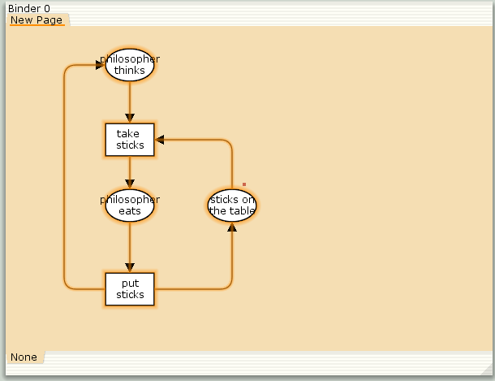
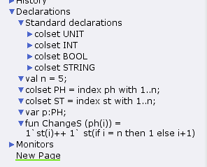
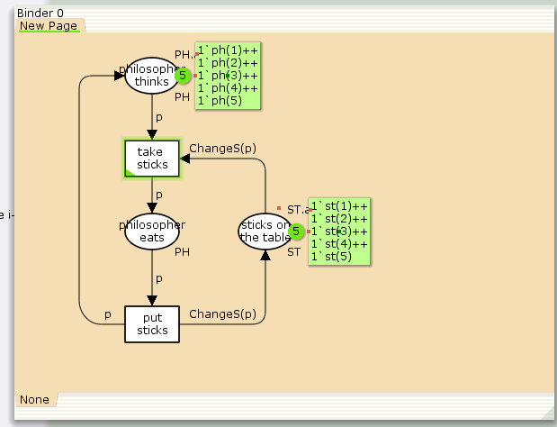
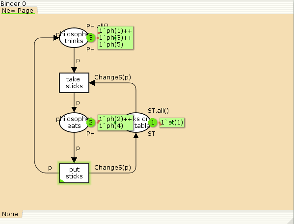
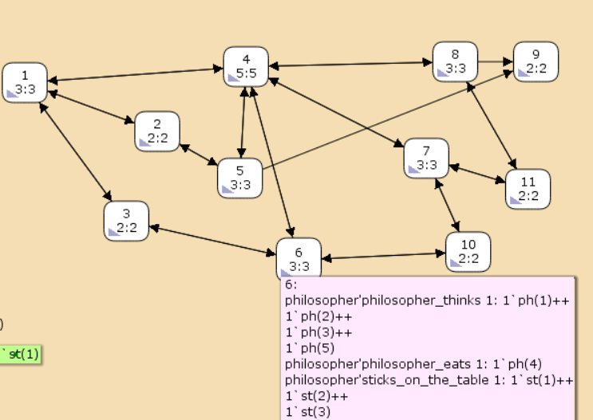

Реализовать модель задачи об обедающих мудрецах в CPN Tools.
Постановка задачи
Пять мудрецов сидят за круглым столом и могут пребывать в двух состояниях – думать и есть. Между соседями лежит одна палочка для еды. Для приёма пищи необходимы две палочки. Палочки – пересекающийся ресурс. Необходимо синхронизировать процесс еды так, чтобы мудрецы не умерли с голода.
Рисуем граф сети. Для этого с помощью контекстного меню создаём новую сеть, добавляем позиции, переходы и дуги (рис. [-@fig:001]). Начальные данные:
позиции: мудрец размышляет (philosopher thinks), мудрец ест (philosopher eats), палочки находятся на столе (sticks on the table) переходы: взять палочки (take sticks), положить палочки (put sticks)

В меню задаём новые декларации модели (рис. [-@fig:002]): типы фишек, начальные значения позиций, выражения для дуг:
n — число мудрецов и палочек p — фишки, обозначающие мудрецов, имеют перечисляемый тип PH от 1 до s — фишки, обозначающие палочки, имеют перечисляемый тип ST от 1 до функция ChangeS(p) ставит в соответствие мудрецам палочки (возвращает номера палочек, используемых мудрецами); по условию задачи мудрецы сидят по кругу и мудрец p(i) может взять i и i+1 палочки, поэтому функция ChangeS(p) определяется следующим образом:
fun ChangeS (ph(i))=
1`st(i)++st(if = n then 1 else i+1)
В результате получаем работающую модель (рис. [-@fig:003]).

После запуска модели наблюдаем, что одновременно палочками могут воспользоваться только два из пяти мудрецов (рис. [-@fig:004]).

Вычислим пространство состояний. Прежде, чем пространство состояний может быть вычислено и проанализировано, необходимо сформировать код пространства состояний. Этот код создается, когда используется инструмент Войти в пространство состояний. Вход в пространство состояний занимает некоторое время. Затем, если ожидается, что пространство состояний будет небольшим, можно просто применить инструмент Вычислить пространство состояний к листу, содержащему страницу сети. Сформируем отчёт о пространстве состояний и проанализируем его. Чтобы сохранить отчет, необходимо применить инструмент Сохранить отчет о пространстве состояний к листу, содержащему страницу сети и ввести имя файла отчета.
Из отчета можем узнать, что:
есть 11 состояний и 30 переходов между ними;
указаны границы значений для каждого элемента: думающие мудрецы (максимум - 5, минимум - 3), мудрецы едят (максимум - 2, минимум - 0), палочки на столе (максимум - 5, минимум - 1, минимальное значение 2, так как в конце симуляции остаются пирожки);
указаны границы в виде мультимножеств;
маркировка home для всех состояний;
маркировка dead равна None;
указано, что бесконечно часто происходят события положить и взять палочку.
CPN Tools state space report for:
/var/tmp/petri.cpn
Report generated: Sat Apr 26 17:03:47 2025
Statistics
------------------------------------------------------------------------
State Space
Nodes: 11
Arcs: 30
Secs: 0
Status: Full
Scc Graph
Nodes: 1
Arcs: 0
Secs: 0
Boundedness Properties
------------------------------------------------------------------------
Best Integer Bounds
Upper Lower
New_Page'philosopher_eats 1
2 0
New_Page'philosopher_thinks 1
5 3
New_Page'sticks_on_the_table 1
5 1
Построим граф пространства состояний (рис. [-@fig:005]).

В процессе выполнения данной лабораторной работы я реализовала модель задачи об обедающих мудрецах в CPN Tools.